4개 채널 키프레임 제작 완료 검수판 ($0.00)
전 레포 장소 정본 · 캐릭터 시트 · 키프레임 생성 및 전 단계 무료 게이트 검증 100% 통과 (H3 유료 발주 직전 대기 중) · 시나리오·대본 검수판 보기 →
① 꼬미랑 서연이 — 《펴주면 꼭 다시 파는 꼬미》 (AUTO-261104-1056)
doctor · plan · places · plates · keyframes · scale · cameras · board · cuts_judge PASS ($0.00)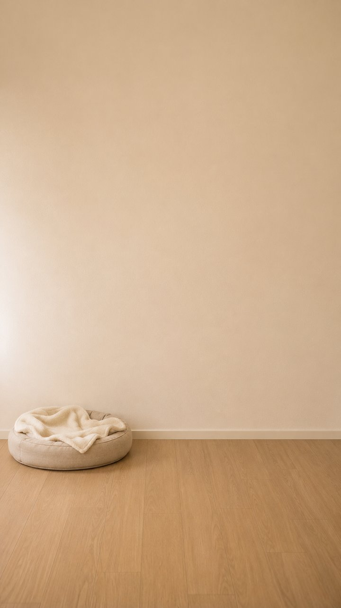
장소 정본 (living_cushion)낮 거실 바닥 · 방석 고정
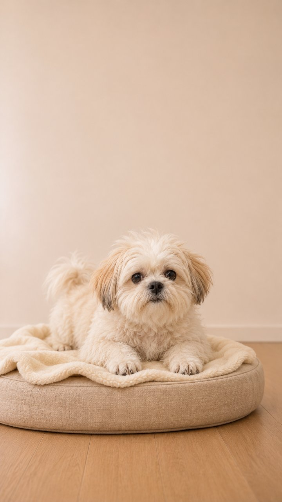
C01 (0:00.0–0:03.0) (무대사)
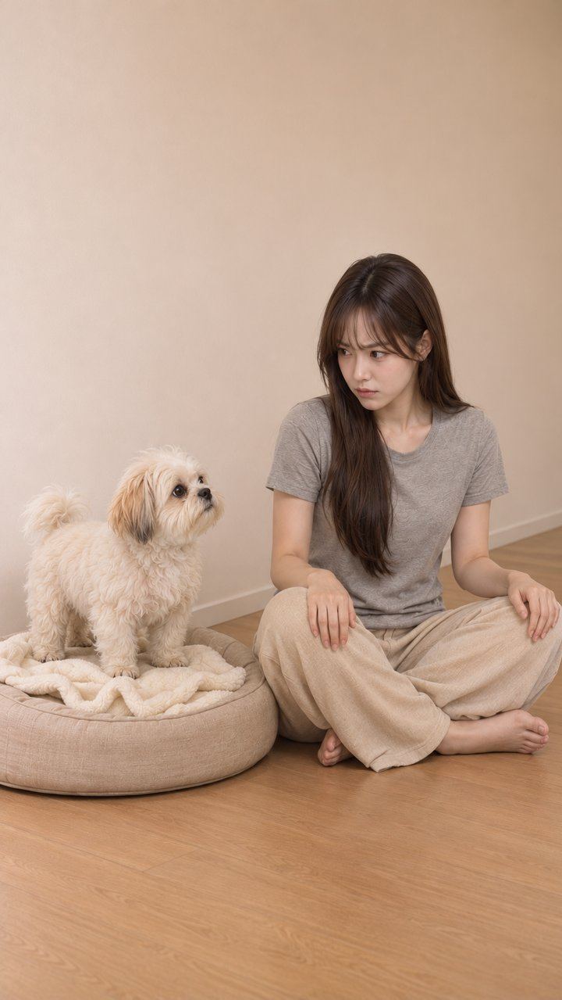
C02 (0:03.0–0:06.0) (무대사)
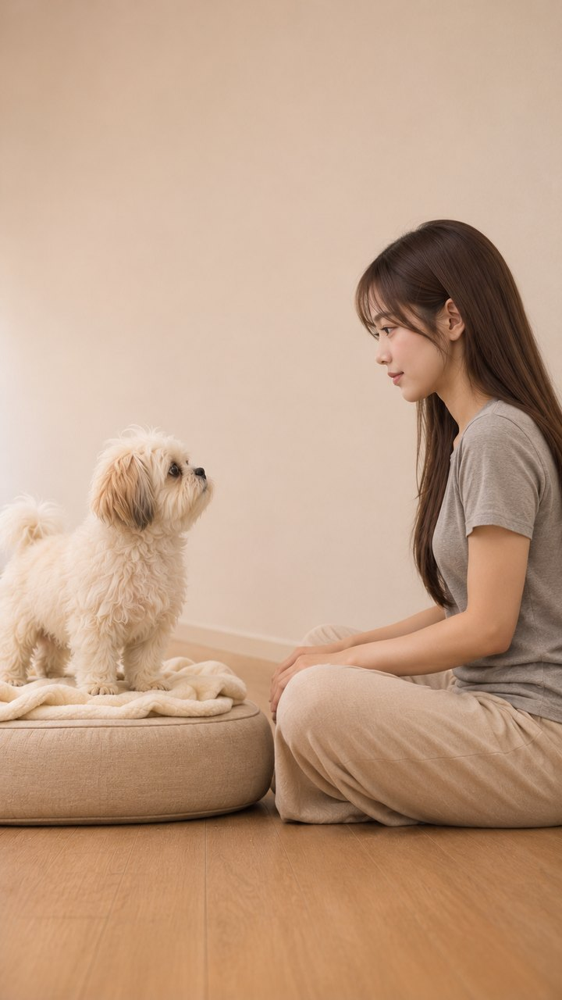
C03 (0:06.0–0:09.0) (무대사)
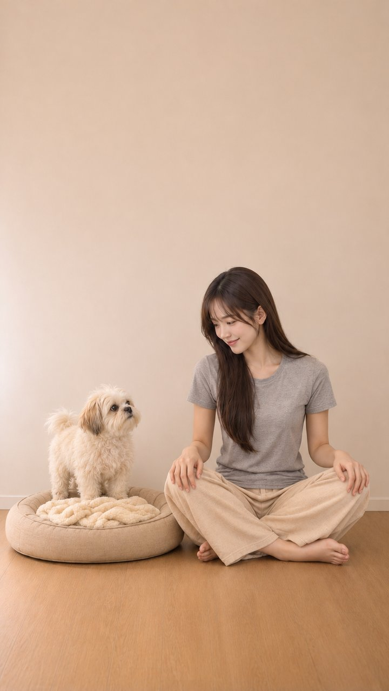
C04 (0:09.0–0:12.0) (무대사)
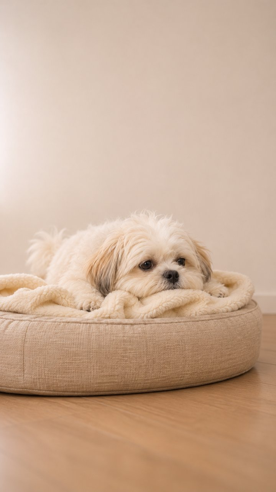
C05 (0:12.0–0:15.0) (무대사)
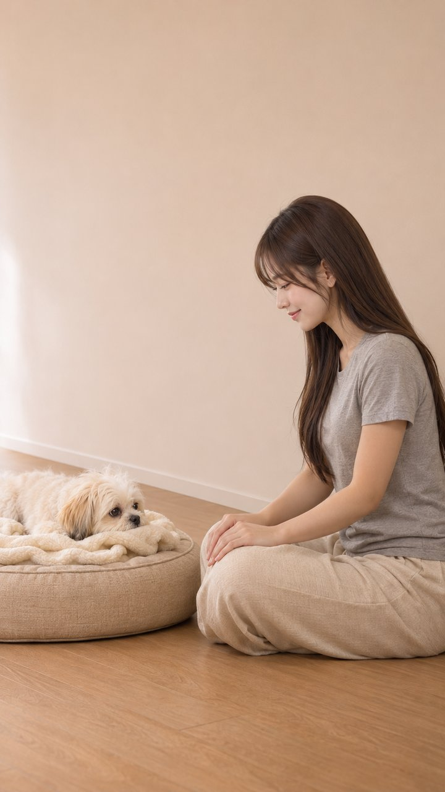
C06 (0:15.0–0:18.0) (무대사)
C07 (0:18.0–0:21.0) (무대사)
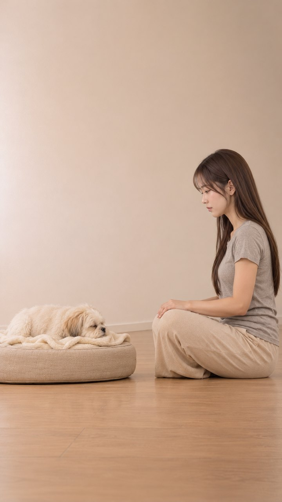
C08 (0:21.0–0:24.0) (무대사)
② 냥아치김동식 — 《털만 정리하자》 (AUTO-261104-1124)
gates · canon · kf C01~C06 · seams · cuts_council PASS ($0.00)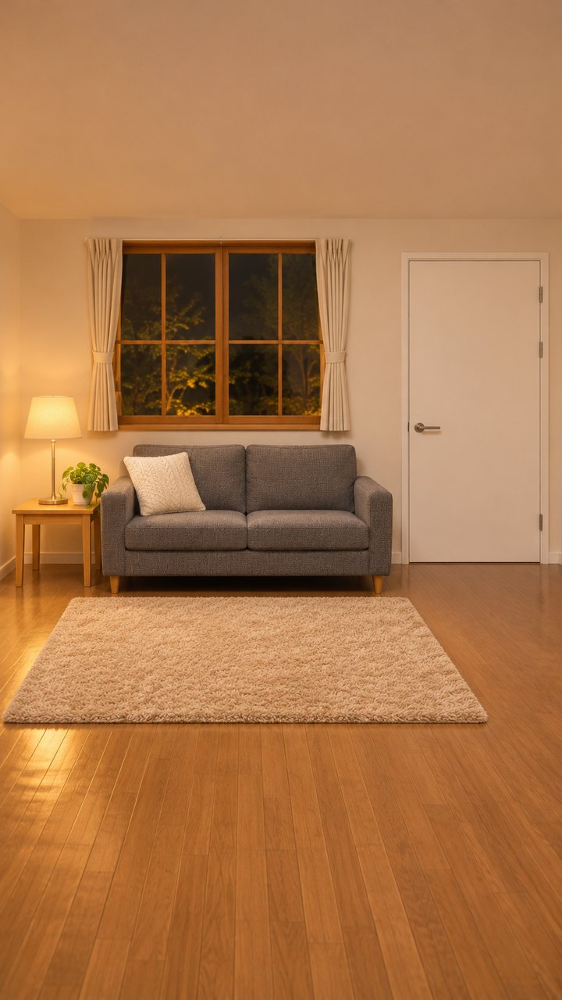
장소 정본 (living_room)저녁 거실 러그 · 베이지 소파 앞
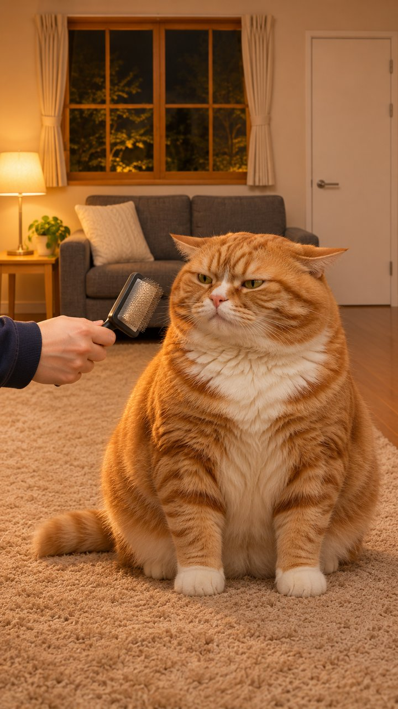
C01 (0:00.0–0:04.0)동식: “털 뽑으러 왔냐?”
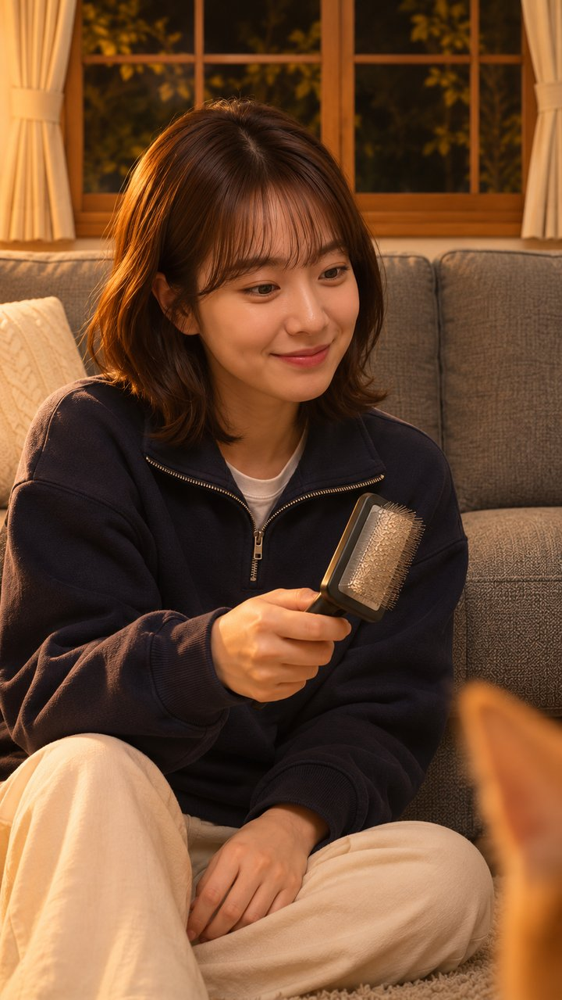
C02 (0:04.0–0:08.0)수아: “털 뭉친 거 빼면 홀쭉해져.”
C03 (0:08.0–0:12.0)동식: “빗질로 몸이 줄어드냐?”
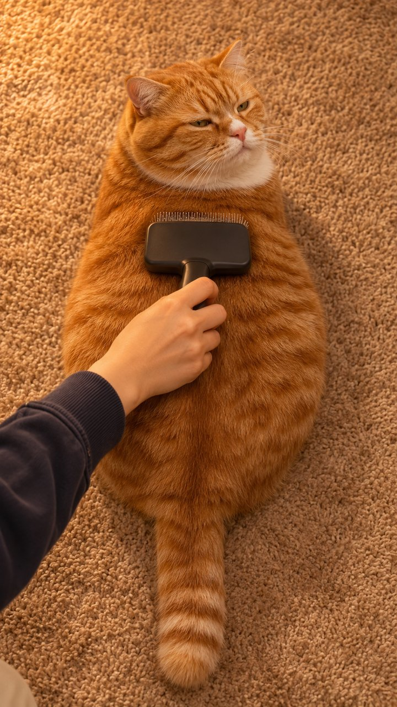
C04 (0:12.0–0:16.0)(무대사 · 여러 번 빗질 후 브러시에 수북이 뭉친 주황색 털 확인)
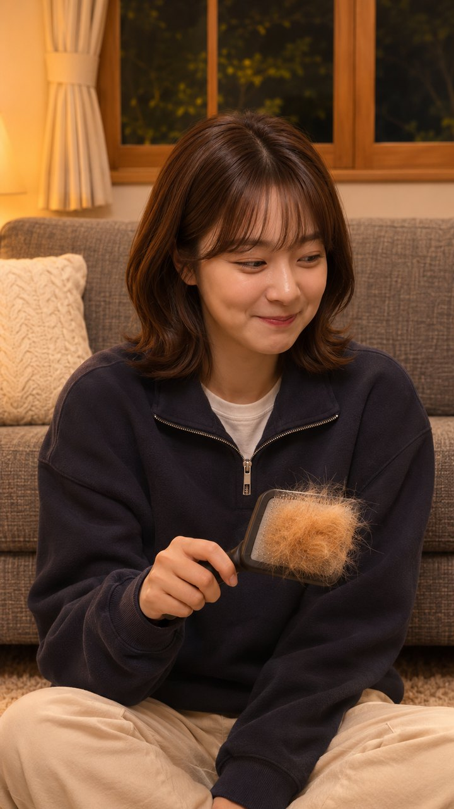
C05 (0:16.0–0:20.0)수아: “털은 이만큼 빠졌는데 몸은 그대로네.”
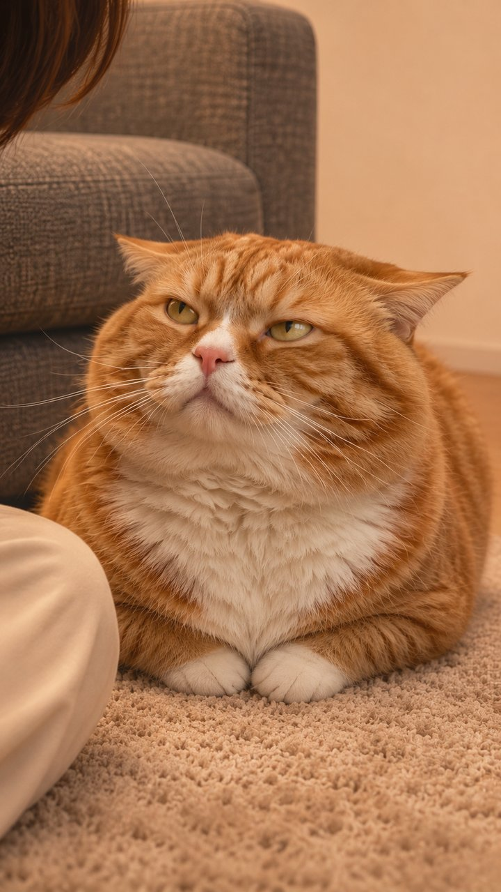
C06 (0:20.0–0:24.0)동식: “넌 앞머리 자르고 얼굴 작아졌냐?”
③ 도윤이는 24개월 — 《약국에서 빨간 공룡 밴드를 처음 본 두 살》 (AUTO-261104-1515)
author · sheet · D0~D2.5 · D3_gate · D3 · D4 PASS ($0.00)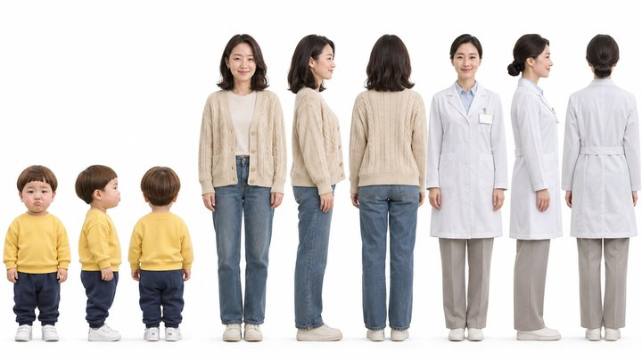
캐릭터 시트 (character-sheet_01)도윤 · 엄마 · 약사님
C01 (0:00.0–0:04.0)도윤: “매운 공룡이다!”
동네 약국 계산대 앞, 엄마 품에 안긴 도윤이 앞에 약사님이 빨간 공룡 밴드 상자를 내려놓자 도윤이가 오른손 검지로 공룡 그림을 콕 짚는다.
동네 약국 계산대 앞, 엄마 품에 안긴 도윤이 앞에 약사님이 빨간 공룡 밴드 상자를 내려놓자 도윤이가 오른손 검지로 공룡 그림을 콕 짚는다.
C02 (0:04.0–0:08.0)약사님: “빨간 공룡이네~”
약사님이 처음 듣는 말에 눈을 동그랗게 뜨고 상자를 두 손가락으로 엄마 품에 안긴 도윤이 앞쪽으로 조금 더 가까이 밀어 보여 준다.
약사님이 처음 듣는 말에 눈을 동그랗게 뜨고 상자를 두 손가락으로 엄마 품에 안긴 도윤이 앞쪽으로 조금 더 가까이 밀어 보여 준다.
C03 (0:08.0–0:12.0)도윤: “어우, 매워~!”
엄마 품에 안긴 도윤이가 상자 위 빨간 공룡을 보며 두 손바닥을 입 양옆에 펴고 입가에 부채질을 한다.
엄마 품에 안긴 도윤이가 상자 위 빨간 공룡을 보며 두 손바닥을 입 양옆에 펴고 입가에 부채질을 한다.
C04 (0:12.0–0:18.0)도윤: “공룡이 너무 매워요!”
엄마 품에 안긴 도윤이가 볼을 빵빵하게 부풀린 채 두 손 부채질을 더 빨리 하며 약사님에게 하소연한다.
엄마 품에 안긴 도윤이가 볼을 빵빵하게 부풀린 채 두 손 부채질을 더 빨리 하며 약사님에게 하소연한다.
④ 다정한기척 — 《학생, 집에 있었네?》 (AUTO-261104-1515)
pack · sets · sheets · keyframes (17컷+암전1컷) · kf_mouth · lint PASS ($0.00)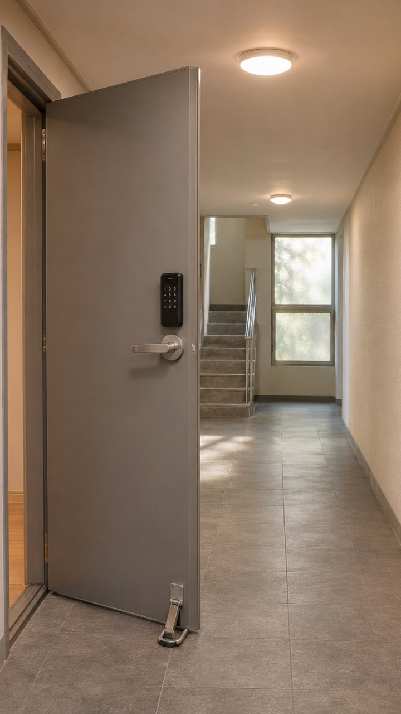
세트 (studio_hallway)1층 원룸 복도
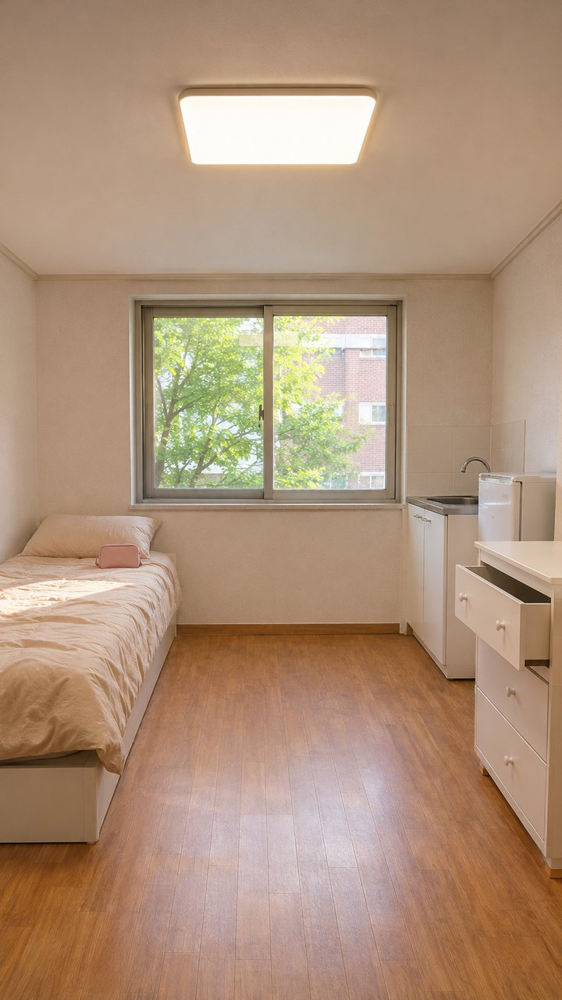
세트 (studio_room)102호 원룸 침실 방
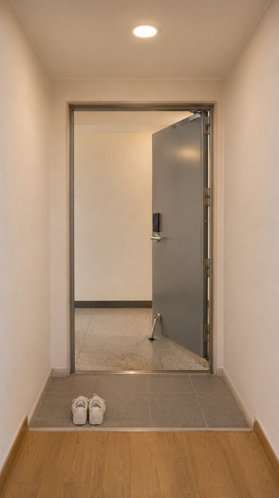
세트 (studio_entryway)102호 원룸 현관
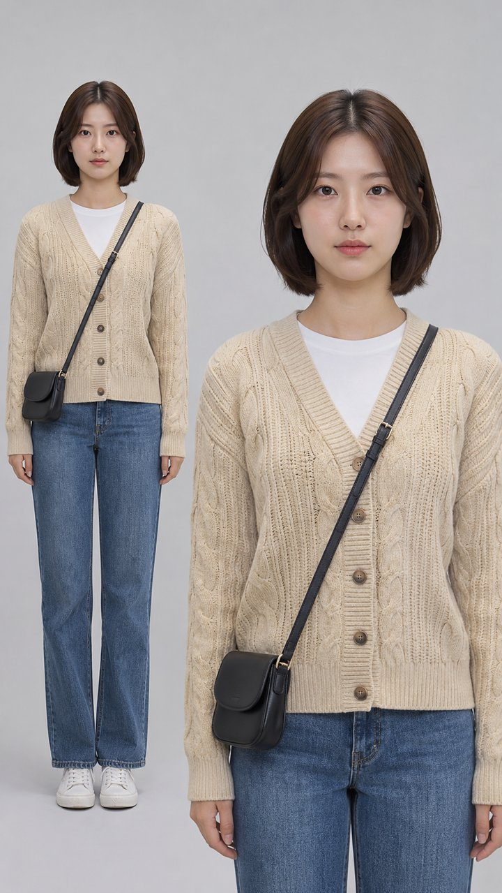
캐릭터 시트 (REAL_수빈)수빈
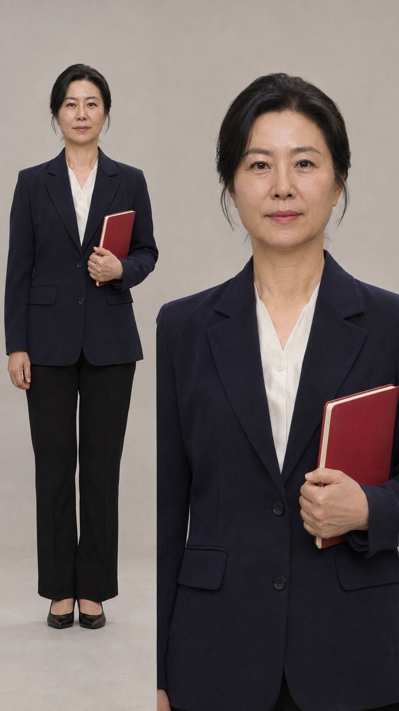
캐릭터 시트 (REAL_중개사)중개사
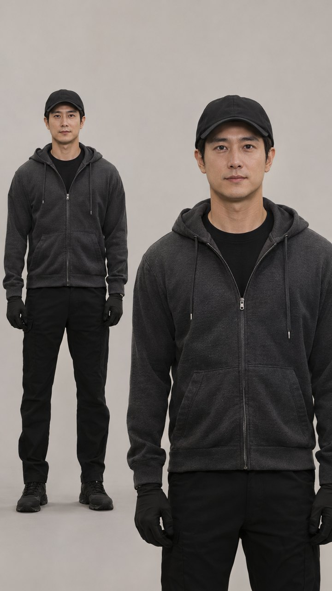
캐릭터 시트 (REAL_남자)남자
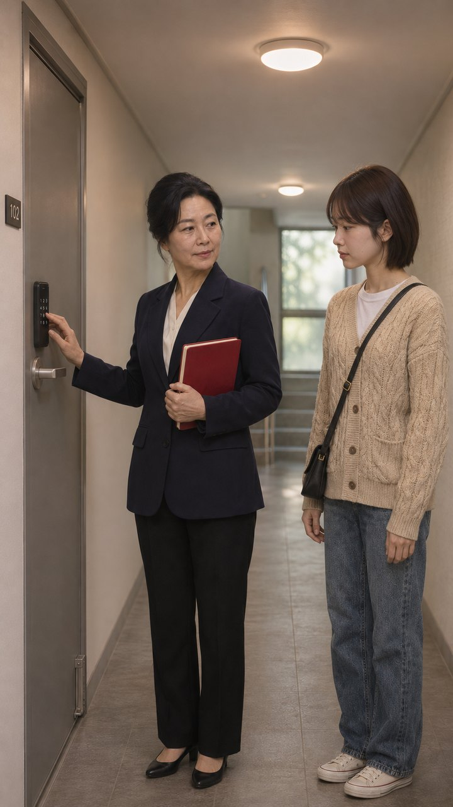
C01 (0:00.0–0:03.0) [studio_hallway·A]중개사: “세입자 학생은 지금 수업 갔대요”
따뜻한 천장 LED 등이 켜진 1층 원룸 복도. 왼손에 붉은 매물 수첩을 든 중개사(왼쪽 1/3)가 닫혀 있는 102호 회색 철제 현관문 도어락을 오른손으로 누르며 뒤따라온 수빈(오른쪽 1/3)을 3/4 각도로 돌아보고 밝게 말한다.
따뜻한 천장 LED 등이 켜진 1층 원룸 복도. 왼손에 붉은 매물 수첩을 든 중개사(왼쪽 1/3)가 닫혀 있는 102호 회색 철제 현관문 도어락을 오른손으로 누르며 뒤따라온 수빈(오른쪽 1/3)을 3/4 각도로 돌아보고 밝게 말한다.
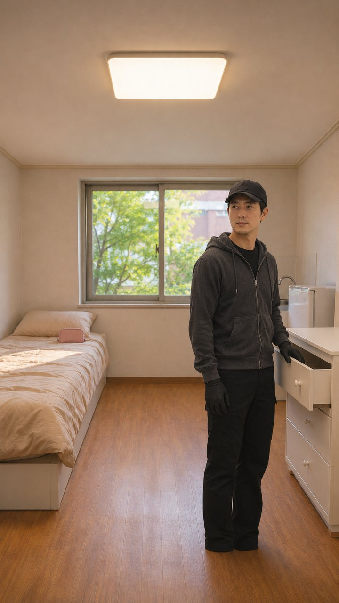
C02 (0:03.0–0:05.5) [studio_room·A](무대사) 천장 LED 등과 창문 채광이 비치는 원룸 방 안(온돌 마루 바닥, 왼쪽 침대와 분홍 파우치, 오른쪽 반쯤 열린 흰 3단 서랍장과 소형 냉장고). 오른쪽 흰 3단 서랍장 앞에 검은 모자와 검은 장갑을 낀 남자가 서 있다가 고개를 돌려 현관 쪽(화면 왼쪽)을 본다.
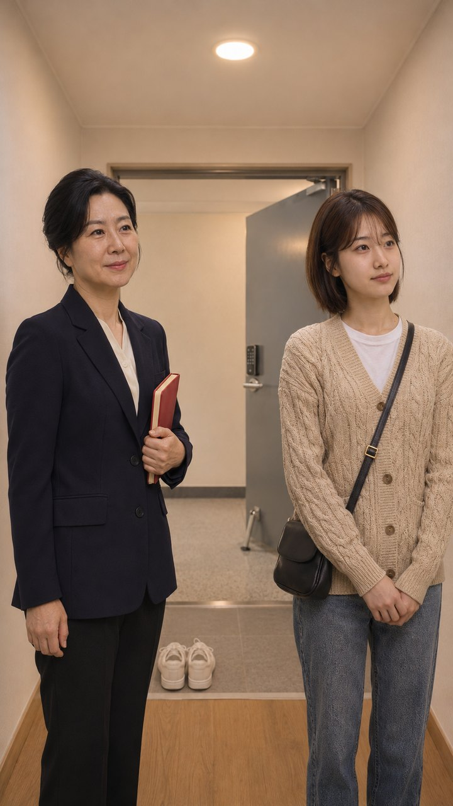
C03 (0:05.5–0:08.5) [studio_entryway·A]중개사: “어? 학생, 오늘 집에 있었네?”
바깥 복도 쪽으로 활짝 열린 102호 현관문 안쪽. 회색 현관 타일 위 흰 여성용 단화 옆에 선 중개사(왼쪽 1/3, 왼손에 붉은 수첩)와 수빈(오른쪽 1/3)이 방 안쪽을 3/4 시선으로 바라보며 중개사가 살갑게 묻는다.
바깥 복도 쪽으로 활짝 열린 102호 현관문 안쪽. 회색 현관 타일 위 흰 여성용 단화 옆에 선 중개사(왼쪽 1/3, 왼손에 붉은 수첩)와 수빈(오른쪽 1/3)이 방 안쪽을 3/4 시선으로 바라보며 중개사가 살갑게 묻는다.
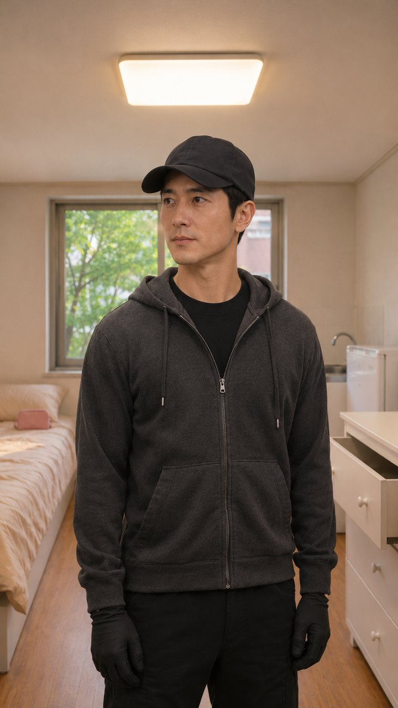
C04 (0:08.5–0:11.5) [studio_room·A]남자: “네… 몸이 안 좋아서 일찍 왔어요”
원룸 방 안쪽 흰 3단 서랍장 앞(온돌 마루 위). 남자(허리 위 미디엄 클로즈업)가 몸으로 반쯤 열린 서랍을 자연스럽게 가리고 화면 왼쪽(현관 방향)을 3/4 시선으로 바라보며 낮게 답한다.
원룸 방 안쪽 흰 3단 서랍장 앞(온돌 마루 위). 남자(허리 위 미디엄 클로즈업)가 몸으로 반쯤 열린 서랍을 자연스럽게 가리고 화면 왼쪽(현관 방향)을 3/4 시선으로 바라보며 낮게 답한다.
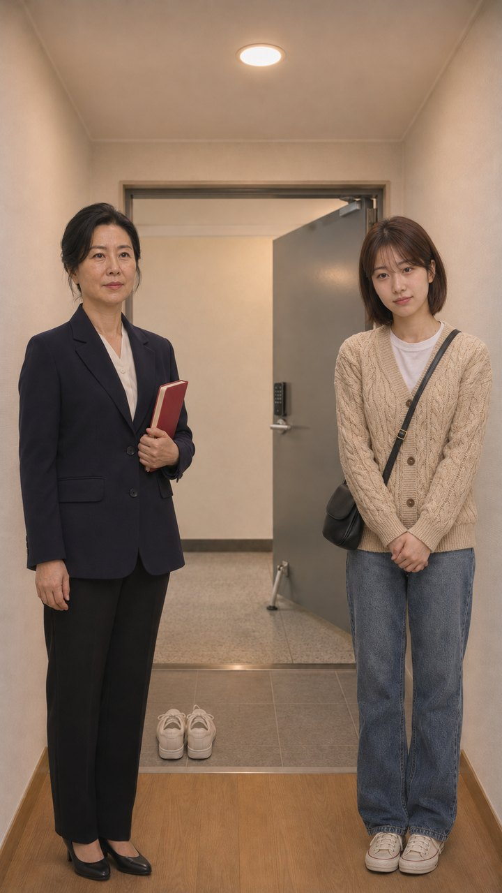
C05 (0:11.5–0:14.0) [studio_entryway·A]수빈: “쉬시는데 죄송해요, 금방 볼게요”
바깥 복도 쪽으로 활짝 열린 102호 현관문 안쪽. 중개사(왼쪽 1/3) 옆에 선 수빈(오른쪽 1/3)이 방 안쪽을 향해 미안한 표정으로 고개를 살짝 숙이며 인사한다.
바깥 복도 쪽으로 활짝 열린 102호 현관문 안쪽. 중개사(왼쪽 1/3) 옆에 선 수빈(오른쪽 1/3)이 방 안쪽을 향해 미안한 표정으로 고개를 살짝 숙이며 인사한다.
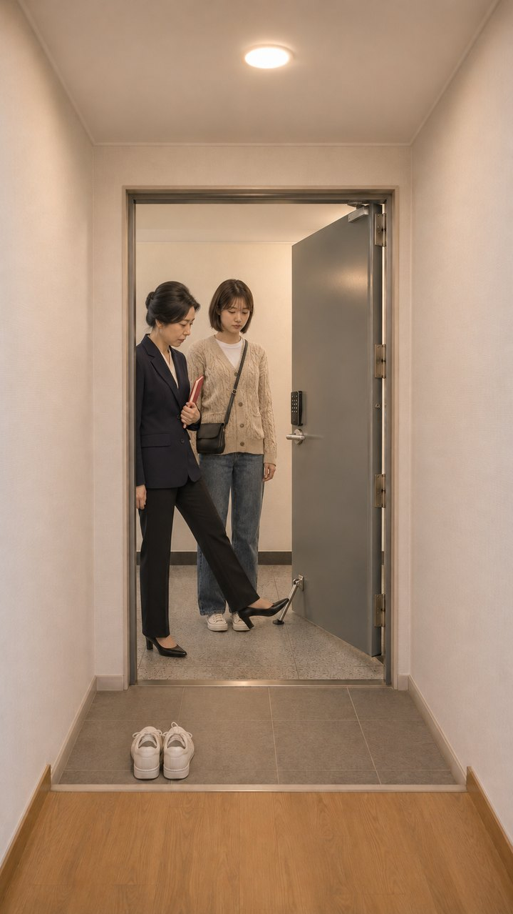
C06 (0:14.0–0:17.0) [studio_entryway·A](무대사) 바깥 복도로 활짝 열린 102호 현관문. 중개사의 시선이 현관 타일 바닥의 작은 흰 여성용 단화를 스치며 굳어지고, 바깥 복도 쪽으로 열린 철문 하단의 말발굽(도어스토퍼)을 발로 꾹 밟아 내려 문을 열린 채로 고정한다.
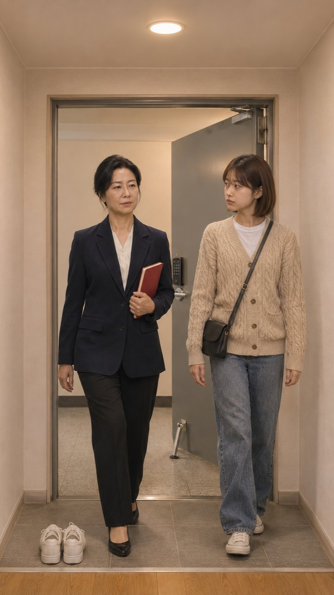
C07 (0:17.0–0:20.0) [studio_entryway·A]중개사: “바람 좀 통하게 문 다 열어 둘게요!”
바깥 복도 쪽으로 활짝 열려 말발굽으로 고정된 현관문을 등지고, 중개사(왼쪽 1/3)가 의아해하는 수빈(오른쪽 1/3) 옆을 지나 방 안쪽으로 걸어 나오며 일부러 밝고 큰 목소리로 말한다.
바깥 복도 쪽으로 활짝 열려 말발굽으로 고정된 현관문을 등지고, 중개사(왼쪽 1/3)가 의아해하는 수빈(오른쪽 1/3) 옆을 지나 방 안쪽으로 걸어 나오며 일부러 밝고 큰 목소리로 말한다.
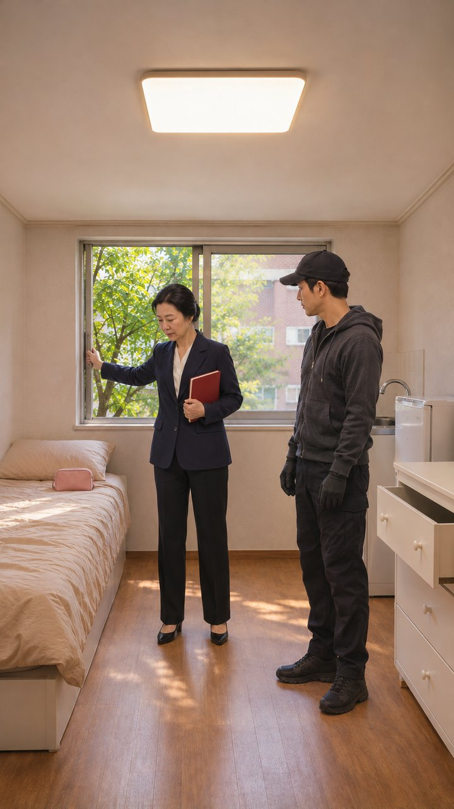
C08 (0:20.0–0:22.5) [studio_room·A](무대사) 원룸 방 안쪽. 중개사(왼쪽 중앙)가 정면 미닫이 창문을 오른손으로 끝까지 활짝 열어젖히며 침대 위 분홍 파우치를 확인하고, 오른쪽 흰 3단 서랍장 앞에 선 남자가 모자 챙 아래로 창문과 현관 쪽을 응시한다.
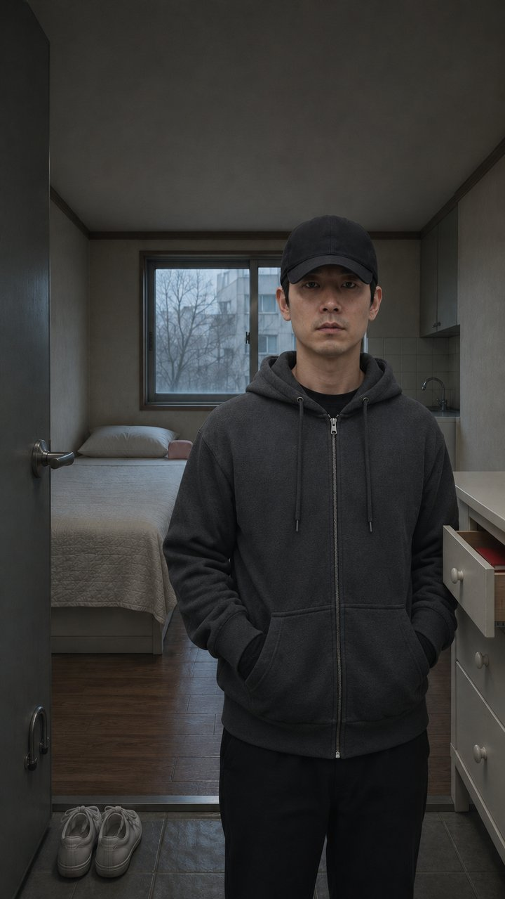
C09 (0:22.5–0:25.5) [studio_room·A]남자: “문 닫으셔도 되는데… 마실 거 드릴까요?”
원룸 방 안쪽 흰 3단 서랍장과 소형 냉장고 사이(온돌 마루 위). 남자(허리 위 미디엄 클로즈업)가 검은 장갑 낀 두 손을 후드 주머니에 반쯤 넣고 화면 왼쪽을 3/4 각도로 바라보며 낮고 차분하게 묻는다.
원룸 방 안쪽 흰 3단 서랍장과 소형 냉장고 사이(온돌 마루 위). 남자(허리 위 미디엄 클로즈업)가 검은 장갑 낀 두 손을 후드 주머니에 반쯤 넣고 화면 왼쪽을 3/4 각도로 바라보며 낮고 차분하게 묻는다.
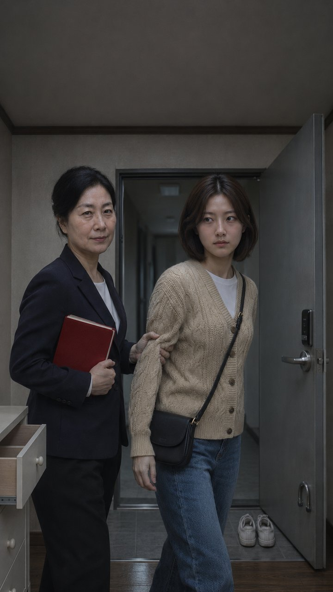
C10 (0:25.5–0:28.5) [studio_entryway·A]중개사: “아유 됐어요! 지금 다른 방도 봐야 해서!”
바깥 복도 쪽으로 활짝 열린 102호 현관문 앞. 현관으로 돌아온 중개사(왼쪽 1/3)가 굳은 미소로 말을 자르며 오른손으로 수빈(오른쪽 1/3)의 팔을 잡아 바깥 복도 쪽으로 열린 현관문으로 끌어당긴다.
바깥 복도 쪽으로 활짝 열린 102호 현관문 앞. 현관으로 돌아온 중개사(왼쪽 1/3)가 굳은 미소로 말을 자르며 오른손으로 수빈(오른쪽 1/3)의 팔을 잡아 바깥 복도 쪽으로 열린 현관문으로 끌어당긴다.
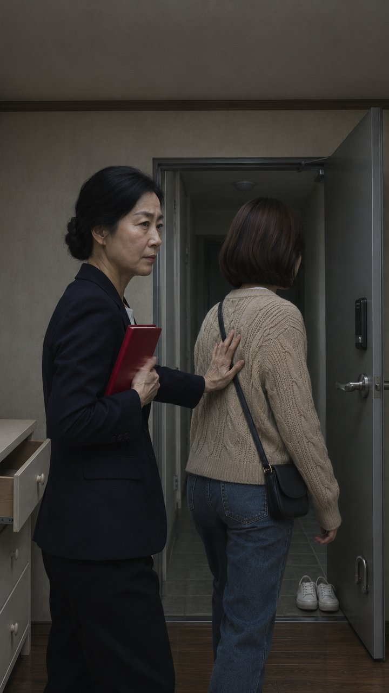
C11 (0:28.5–0:31.0) [studio_entryway·A](무대사) 바깥 복도 쪽으로 활짝 열린 102호 현관문 문턱. 중개사가 수빈의 등을 열린 현관문 밖 복도로 떠민다. 수빈의 베이지색 가디건 등에 닿은 중개사의 오른손과 왼손의 붉은 매물 수첩이 눈에 띄게 덜덜 떨린다.
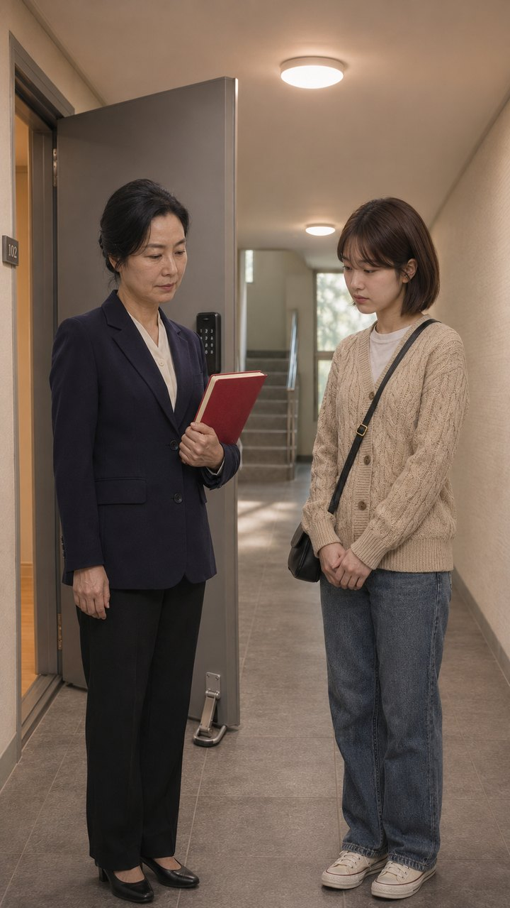
C12 (0:31.0–0:33.5) [studio_hallway·A]수빈: “사장님, 왜 그러세요? 손이 왜 이렇게 떨려요?”
1층 원룸 복도(왼쪽 벽에는 102호 회색 철문이 바깥 복도 쪽으로 활짝 열려 말발굽으로 고정되어 있다). 복도로 나온 수빈(오른쪽 1/3)이 걸음을 멈추고 중개사(왼쪽 1/3)의 떨리는 손을 내려다보며 묻는다.
1층 원룸 복도(왼쪽 벽에는 102호 회색 철문이 바깥 복도 쪽으로 활짝 열려 말발굽으로 고정되어 있다). 복도로 나온 수빈(오른쪽 1/3)이 걸음을 멈추고 중개사(왼쪽 1/3)의 떨리는 손을 내려다보며 묻는다.
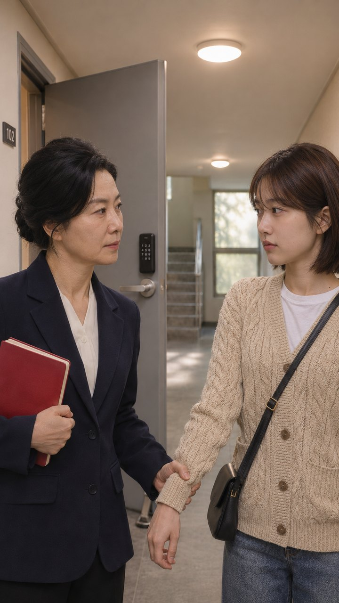
C13 (0:33.5–0:36.5) [studio_hallway·A]중개사: “이 건물… 여성 전용 원룸이에요”
1층 원룸 복도(왼쪽 벽에 바깥 복도 쪽으로 활짝 열린 102호 철문이 보인다). 얼굴이 굳은 중개사(왼쪽 1/3, 왼손에 떨리는 붉은 수첩)가 수빈(오른쪽 1/3)의 팔목을 꽉 잡고 목소리를 낮춰 떨며 말한다.
1층 원룸 복도(왼쪽 벽에 바깥 복도 쪽으로 활짝 열린 102호 철문이 보인다). 얼굴이 굳은 중개사(왼쪽 1/3, 왼손에 떨리는 붉은 수첩)가 수빈(오른쪽 1/3)의 팔목을 꽉 잡고 목소리를 낮춰 떨며 말한다.
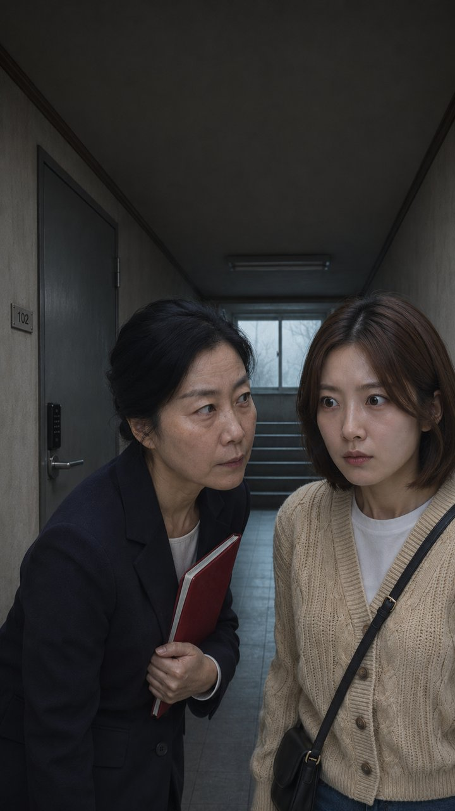
C14 (0:36.5–0:39.0) [studio_hallway·A]중개사: “세입자 여학생이에요. 저 남자, 도둑이에요”
1층 원룸 복도 클로즈업 투샷(왼쪽 벽 뒤로 바깥 복도로 활짝 열린 102호 철문이 보인다). 중개사(왼쪽 1/3)가 침을 삼키며 열린 102호 현관문 쪽을 곁눈질하고 숨죽여 말하고, 수빈(오른쪽 1/3)의 눈이 커진다.
1층 원룸 복도 클로즈업 투샷(왼쪽 벽 뒤로 바깥 복도로 활짝 열린 102호 철문이 보인다). 중개사(왼쪽 1/3)가 침을 삼키며 열린 102호 현관문 쪽을 곁눈질하고 숨죽여 말하고, 수빈(오른쪽 1/3)의 눈이 커진다.
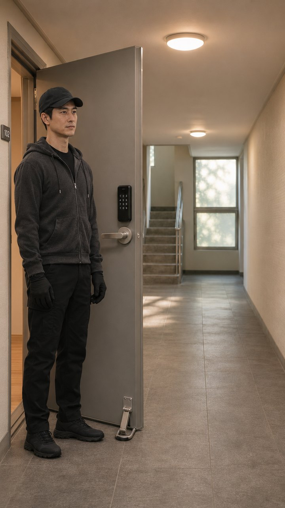
C16 (0:39.5–0:42.0) [studio_hallway·A](무대사) 수빈과 중개사가 돌아본 102호 현관문(왼쪽 벽). 말발굽으로 고정되어 바깥 복도 쪽으로 활짝 열린 회색 철문 문턱에 검은 모자와 검은 장갑을 낀 남자가 빈손으로 나와 서서 복도의 두 사람을 내려다보고 있다.
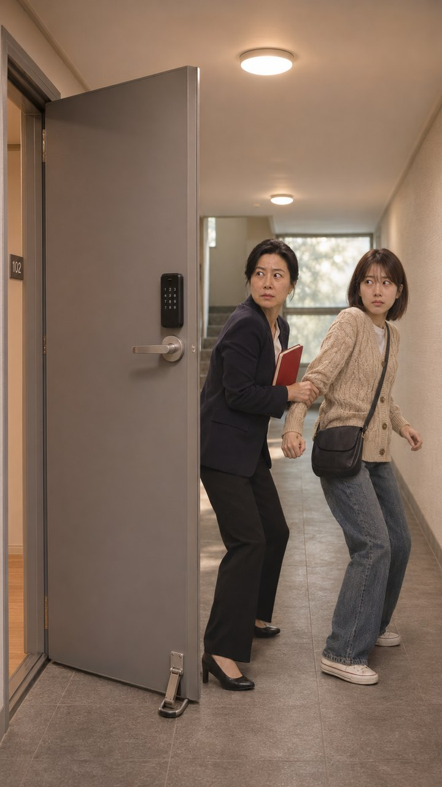
C17 (0:42.0–0:44.5) [studio_hallway·A](무대사) 1층 원룸 복도(왼쪽 벽에는 바깥 복도로 활짝 열린 102호 철문이 보인다). 겁에 질린 수빈(오른쪽 1/3)을 중개사(왼쪽 1/3)가 오른손으로 세게 잡아끌며 계단 쪽으로 급히 뒷걸음질 친다.
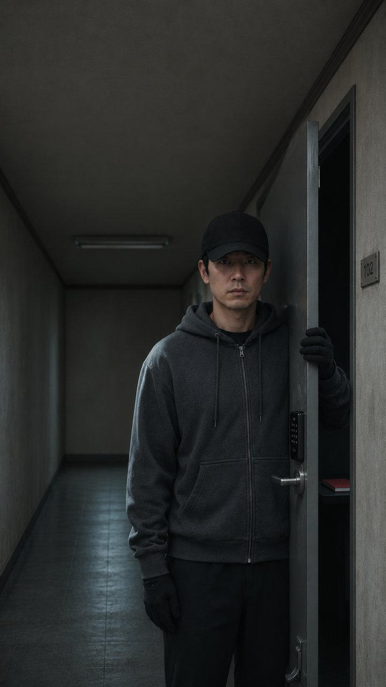
C18 (0:44.5–0:48.0) [studio_hallway·A]남자: “마실 거… 안 드시고 가세요?”
바깥 복도 쪽으로 활짝 열린 102호 현관문 문턱에 선 남자(허리 위 미디엄 클로즈업). 검은 장갑 낀 왼손으로 바깥쪽으로 열려 있는 회색 철문 가장자리를 움켜쥐고, 모자 챙 아래 서늘한 눈빛으로 복도 쪽(3/4 시선)을 바라보며 나직하게 묻는다.
바깥 복도 쪽으로 활짝 열린 102호 현관문 문턱에 선 남자(허리 위 미디엄 클로즈업). 검은 장갑 낀 왼손으로 바깥쪽으로 열려 있는 회색 철문 가장자리를 움켜쥐고, 모자 챙 아래 서늘한 눈빛으로 복도 쪽(3/4 시선)을 바라보며 나직하게 묻는다.